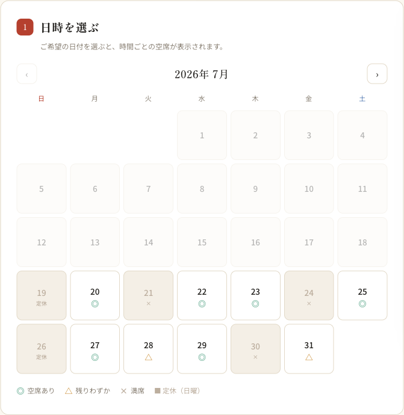
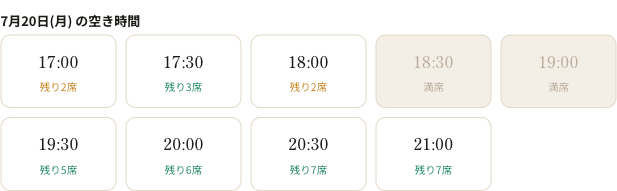
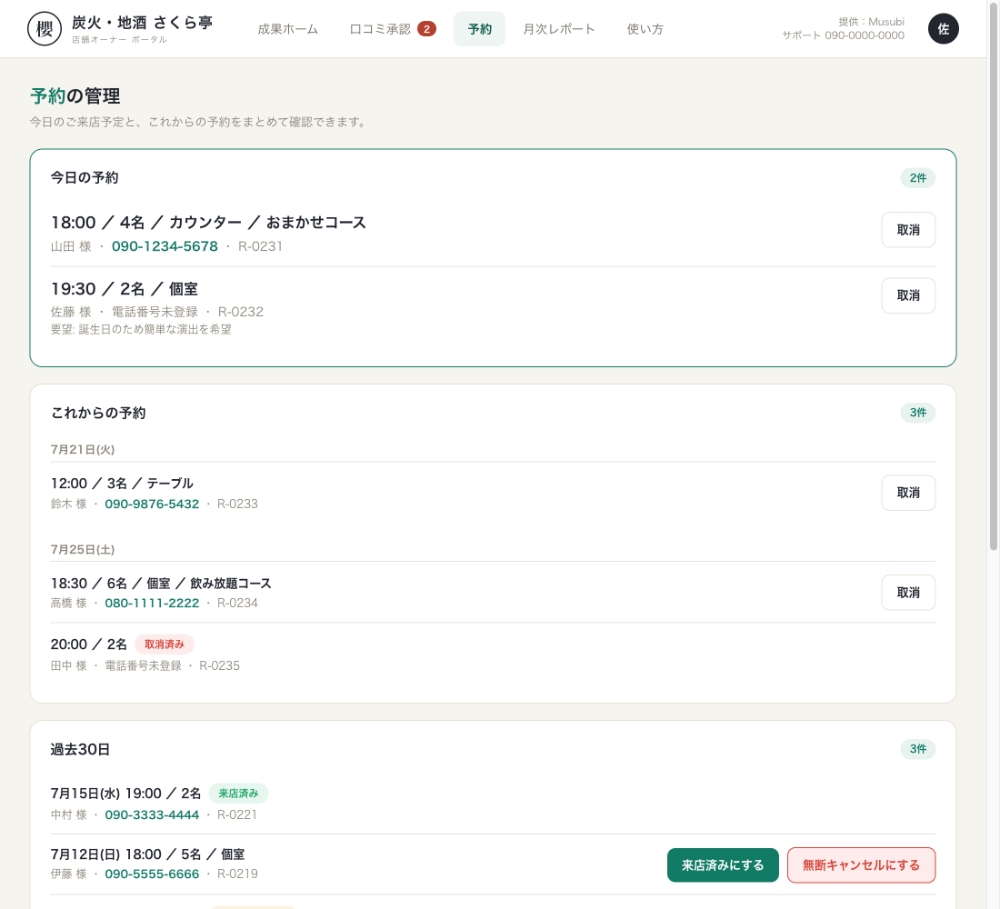
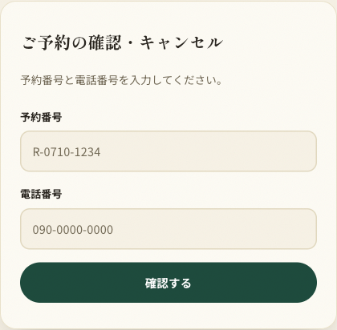

Musubi環境構築ドキュメント
Musubi環境構築ドキュメントネット予約システム マニュアル（店舗さま向け）
Musubi のネット予約は、お店の公式サイトから24時間予約を受け付け、確認・リマインド・キャンセルまで自動で回す仕組みです。予約手数料は何件入っても 0円。このマニュアルでは、お客様（来店される方）から見た流れと、店舗さまが行う操作をご説明します。
1. お客様からはこう見えます（予約の流れ）
お店の公式サイトの「ご予約」ページから、4つのステップで予約が完了します。
- 日時を選ぶ — カレンダーに空き状況が表示されます。
- 人数・お席の希望を選ぶ
- コースを選ぶ（コースなしも選べます）
- お名前・電話番号・メールアドレスを入力して送信

カレンダーの記号の意味:
| 表示 | 意味 |
|---|---|
| ◎ | 空きあり |
| △ | 残りわずか（予約が7割以上埋まっている日） |
| × | 満席 |
| 休 | 定休日・臨時休業日 |
日付を選ぶと時間帯ごとの残席数が表示されます。この空き状況は実際の予約データと連動しており、予約やキャンセルが入ると自動で変わります。同じ枠に同時に申し込みがあっても、二重予約にならない仕組みになっています。

予約が完了すると、お客様に確認メールが自動送信されます。メールには予約内容と、キャンセル用のリンクが記載されています。
2. 予約が入ったら（店舗さまへの通知）
新しい予約・キャンセルが入ると、店舗さまに自動で通知が届きます。
- メール通知 — ご登録の通知先メールアドレスへ
- LINE通知 — 公式LINE連携がお済みの場合、LINEにも即時に届きます（例: 「新しい予約: 7/25 18:00 山田様 4名 おまかせコース」）
3. 予約の管理（顧客ポータル）
顧客ポータルの「予約」タブで、予約の確認と管理ができます。

- 今日の予約 — 時間順に、人数・お席の希望・コース・お客様のお名前と電話番号（タップで発信）・ご要望を表示
- これからの予約 — 日付ごとにまとめて表示
- 過去30日 — 済んだ予約の履歴
できる操作:
- 取消 — 店側都合等で予約を取り消す場合。取消するとお客様へ自動でお知らせメールが送られ、その枠の空きはすぐに復活します。
- 来店済み — 来店されたお客様に記録を付けます。
- 無断キャンセル — 連絡なく来店されなかった場合の記録です。リピート分析や再予約時の参考になります。
4. 臨時休業・席数の変更
「予約」タブの「臨時休業・特別営業日」から、日にちを指定して設定できます。
- 休業にする — その日はサイトのカレンダーに「休」と表示され、新規予約を受け付けません。
- 席数を変える — 貸切や宴会で一部の席が使えない日などに、その日だけ受け入れ人数を変更できます。
設定した内容は、お店のサイトの空き表示にすぐ反映されます。
5. キャンセルのしくみ
- お客様は、確認メールのリンクから電話なしでキャンセルできます（受付は前日までが標準です。ご希望に応じて「当日2時間前まで」等に変更できます）。
- 期限を過ぎたキャンセルは、お電話でのご連絡をご案内する画面になります。
- 予約番号と電話番号で予約内容を確認できる予約確認ページもあります（メールを紛失した場合など）。

- 前日リマインド — ご予約の前日午前に、お客様へ自動でリマインドメールが届きます。キャンセルリンク付きのため、「うっかり忘れ」も「無断キャンセル」も減らせます。
- お客様がキャンセルすると、店舗さまへメール・LINEで通知が届き、空き枠は自動で復活します。
6. LINE予約 —「かんたん」と「自動」の違い
LINEでの予約導線は2種類あり、プランによって異なります。
LINEかんたん予約（スタンダードプラン）
お客様が予約ページで日時・人数を選ぶと、その内容が入ったメッセージがお店の公式LINEのトーク画面に自動で用意されます。お客様は送信ボタンを押すだけ。
- 予約の確定はお店の返信で行います（トークで「承りました」と返す運用）
- お客様は使い慣れたLINEで完結、お店は普段のLINE対応の延長で受けられます
- 特別な設定はほぼ不要（公式LINEアカウントがあれば使えます）
LINE自動予約（プレミアムプラン）
お客様がLINEでメッセージを送ると、システムが空き状況を確認して自動で予約を確定し、自動で返信します。
- お店の対応は不要（深夜の予約希望にも即時に「承りました」）
- 空き枠の確認と二重予約の防止も自動
- ご利用には店舗ごとの初期セットアップ（LINE公式アカウントの連携設定）が必要です。導入時に Musubi が代行します
比較表
| LINEかんたん予約 | LINE自動予約 | |
|---|---|---|
| プラン | スタンダード以上 | プレミアム |
| 予約の確定 | お店がLINEで返信して確定 | 自動で即時確定 |
| お店の手間 | トークに返信する | なし |
| 空き状況の確認 | お店が確認して返信 | システムが自動確認 |
| 深夜・営業中の対応 | 手が空いてから返信 | 即時自動返信 |
| 導入設定 | ほぼ不要 | 初期セットアップあり（Musubi代行） |
なお、サイトの予約フォームからの予約は、どちらのプランでも自動で即時確定します（空席連動・確認メール自動送信）。LINE予約は「LINEで予約したい」お客様のための追加の入口です。
7. よくあるご質問
- Q. 予約手数料はかかりますか？ — かかりません。何件入っても 0円です（グルメサイトのような送客手数料はありません）。
- Q. 電話で受けた予約はどうなりますか？ — 電話予約は従来どおりお店の台帳でご管理ください。ネット予約の空き枠は「サイト経由の予約」を基準に計算されます。電話予約が多い時間帯は、席数を少なめに設定しておくと安心です。
- Q. 空き状況の元になる席数は変えられますか？ — はい。平日・週末それぞれの受け入れ人数、予約を受ける時間帯、定休日を設定できます。変更は Musubi までご連絡ください。
- Q. お客様の個人情報は安全ですか？ — 予約情報は暗号化された通信で送られ、店舗さまと Musubi 以外は閲覧できません。
ご不明な点は、顧客ポータルの「メッセージ」または公式LINEからいつでもご連絡ください。
📅 社内ドキュメント（環境構築の証跡・手順）。Musubi / local-web-sales プロジェクト。